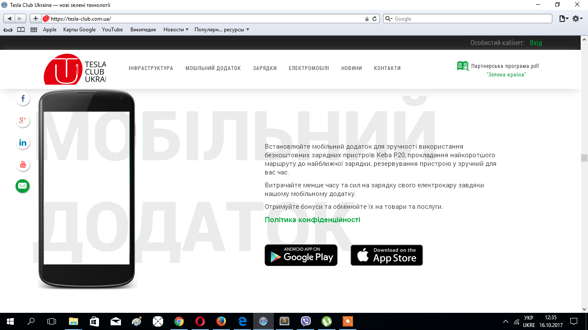
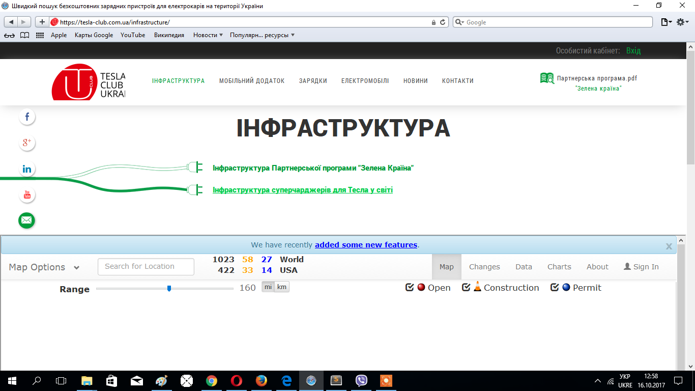
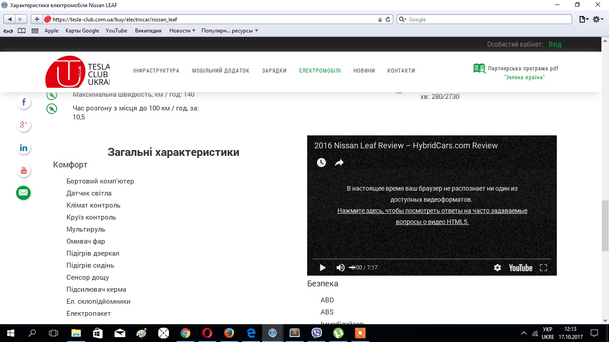
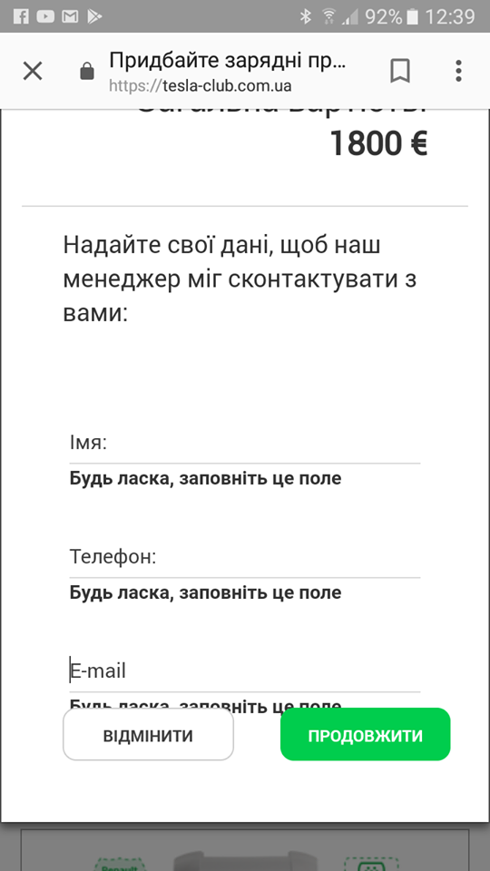

1) Дьорганий перехід при прокрутці вниз до розділу "Про нас". Хотілось би щоб все це відбувалося плавніше і не шарпалось.
2) Задовго скролиться без любих змін на сторінці. Зменшити цей проміжок.
3) Може , звичайно, це так задумано , але не розумію чому ця картинка зразу не підтягується догори а лише з наступним текстом.
4) Фото зарядок підтягуються по черзі . То нехай і зникають по черзі. Тут добре видно , що зникають вони дивно. Спочатку піднімається трошки третя картинка - інші на місці. Після цього перша і третя картинка, а друга на місці , і потім рухаються всі три картинки разом.
5) Обрізаний блок з партнерами в мобільній версії.
6) В "Safari" відео з мобільним додатком не підгружається. (І доречі, не дуже зрозуміло спочатку, що то саме відео - сприймається як картинка.)
+ на цій сторінці те саме.
7) Обрізаний блок з логотипом.
8) Бажано було б при кліку на "Вхід" в особистий кабінет зафіксувати сторінку , щоб не скролилась , або щось таке, бо спотворюється зміст сторінки при прокрутці.
9) В "Safari" не підвантажує карту до "Інфраструктура суперчарджерів для Тесла у світі" + при наведенні міняється стиль на зелений (коли саме ця опція і вибрана) , хоча в інших браузерах не міняє.
10) В мобільній версії обрізаний блок з текстом.
11) Скрипт прaцює таким чином, що зелений стиль отримує та назва, яка зараз НЕ активна. Що не логічно )
11) Не запам'ятовує чи додали ви до замовлення стійку чи ні , і треба задавати цю опцію ще раз.
12) В розділі "ЕЛЕКТРОМОБІЛІ" :
- В "firefox" нема плавного переходу вгорі картинок.
- В "Edge" теж плавного переходу нема + де-не-де якісь незрозумілі бордери. + При наведенні на фото не змінюється стиль.
- В "Safari" При наведенні на фото не змінюється стиль.
- В "Safari" не відображаються кабеля з зарядкою + дивно себе поводять при наведені.
13) В "Safari" не підтримується тег відео з ютуб.
14) Тут пише, що відео про "VW e-up" недоступне.
15) При наведенні на фото не змінюється стиль в "Edge" і в "Safari" тут.
16) Трошки змінити розміщення кнопочок в мобільній версії, щоб не налазили на текст.
PageSpeed Insights
Google оцінив оптимізованість сторінки на комп'ютері і на смартфоні на 31/100. Подробиці ТУТ.
Щоб отримати детальний аналіз натисніть там "как исправить".
Валідатор w3c
Код не валідний. Треба виправити помилки які описані тут , а також перевірити всі інші сторінки сайту на валідність.